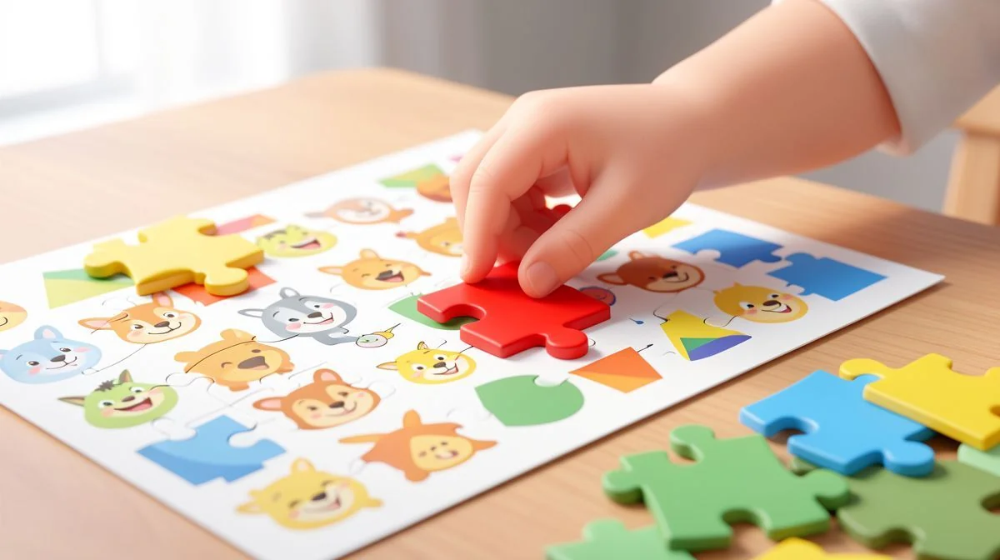
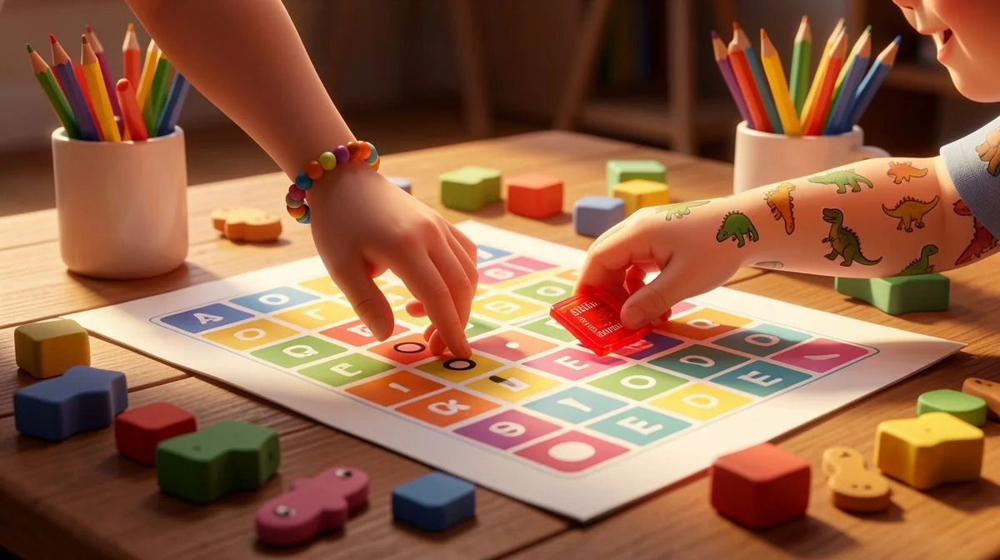
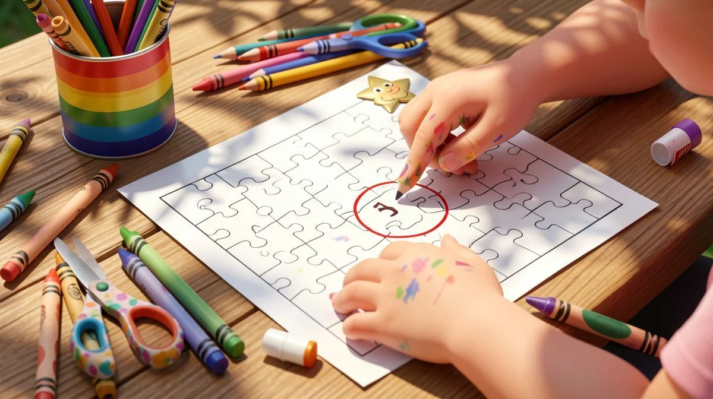
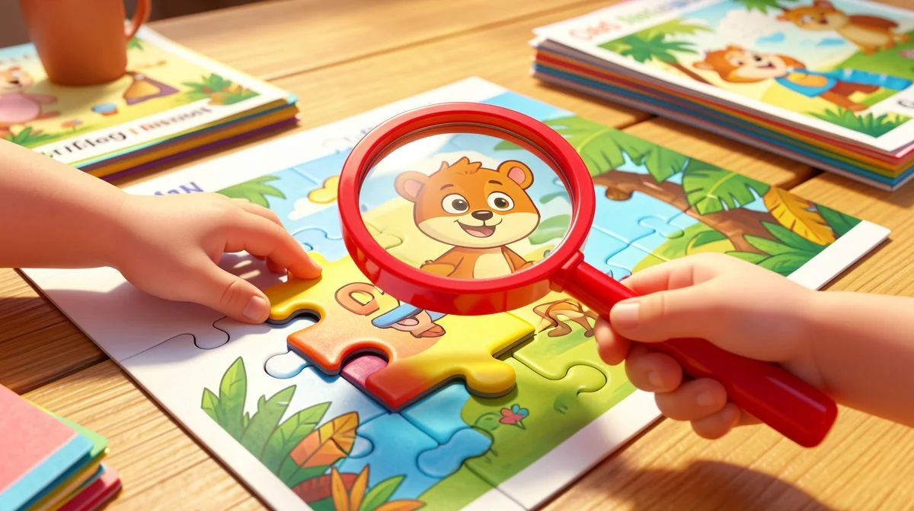
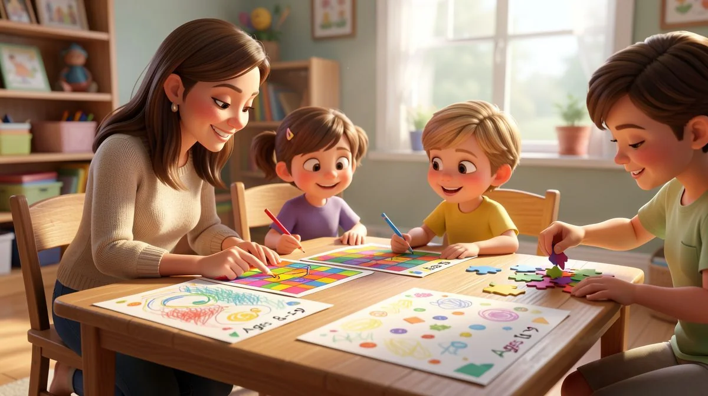

📑 Table of Contents
- Why Printable Logic Puzzles Are Essential for Kids 6-10: Brain-Boosting Benefits
- Cognitive Development Milestones: How Puzzles Build Executive Function Skills
- Problem-Solving Skills in Action: From Worksheets to Real-Life Resilience
- Building Critical Thinking Foundations with Downloadable PDF Resources
- Best Printable Logic Puzzles Worksheets for Different Age Groups
- How to Integrate Printable Logic Puzzles into Classroom and Homeschool Routines
Why Printable Logic Puzzles Are Essential for Kids 6-10: Brain-Boosting Benefits
The Secret Shift in Learning
Can I share something I’ve noticed after years of designing learning materials? It’s a small thing, but it changes everything. The children who get into the habit of working on a logic puzzle, even just once a week, start to see the world through a different lens. They stop just hunting for the right answer.
Instead, they get fascinated by the process of finding it. That’s the secret shift. It turns learning from a destination into a journey they’re excited to navigate. When it comes to Best Printable Logic Puzzles for Kids 6-10, parents have many great options.
From Answers to Pathways: A Lifelong Skill
This isn’t just about puzzles. It’s about preparation. When a child learns to value the “how” as much as the “what,” they’re building a skill that applies to a missing homework folder, a tricky friendship situation, or a complex science project later on. They learn that most big problems are just a series of smaller, manageable steps. That mindset is a gift that keeps giving, long after the puzzle is put away.
And that’s where having a great library of printable logic puzzles for kids 6-10 is so powerful. It’s not a one-and-done activity. It’s a flexible, reusable resource for consistent brain training. You can pull out a fresh challenge on a rainy afternoon, in the waiting room, or as a calm Sunday morning ritual. The format itself supports that regular practice that leads to real change. This is especially helpful for Best Printable Logic Puzzles for Kids 6-10.
Real Classroom Insights from an Educational Designer
Let me be totally honest. In my work, I see a lot of educational tools. The flashy apps, the noisy games. But the quiet focus a child brings to a well-designed logic puzzle? That’s where the real magic happens. I design for that moment. The moment their brow furrows, their finger traces a possibility, and they make a connection all on their own. That’s the moment of genuine cognitive growth.
- Logic puzzles train kids to seek the path to answers, not just answers themselves. This builds patience and strategic thinking, moving them beyond simple guesswork.
- Weekly puzzle practice s a proactive problem-solving mindset applicable to all subjects. The confidence they build at the kitchen table translates directly to tackling a new math concept or writing a story.
- Printable formats offer flexible, reusable resources for consistent cognitive training. They’re cost-effective, portable, and perfect for tailoring the challenge to your child’s exact mood and ability level on any given day.
Cognitive Development Milestones: How Puzzles Build Executive Function Skills
The Brain's Project Manager: Executive Function Explained
Between the ages of six and ten, your child’s brain isn’t just filling up with facts. It’s doing some serious internal construction. It’s building what experts call “executive function.” Think of this as the brain’s project manager. It’s the suite of skills that handles planning, focus, remembering instructions, switching gears, and controlling impulses. These aren’t just school skills; they’re life skills.
This period is absolutely critical for laying down these neural pathways. And the best way to build them? Practice. Not dull, repetitive drills, but engaging, just-right challenges that make the brain work in new ways. This is especially helpful for Best Printable Logic Puzzles for Kids 6-10.
Working Memory and Cognitive Flexibility in Action
Let’s make this real. Imagine a simple 4-piece pattern puzzle for a six-year-old. They’re not just plopping down shapes. Here’s what’s actually happening inside their growing mind: They have to hold the sequence of the pattern in their head (that’s working memory). They check their work against the mental image (“Does this blue square go here?”). When it doesn’t fit, they have to let go of that idea and try a new one without getting frustrated (that’s cognitive flexibility).

That’s executive function in action. It’s the same mental toolkit they’ll use to follow a three-step direction from their teacher, manage their time on a homework assignment, or navigate a disagreement during a playdate. We’re talking about real skills for real life.
Printable Worksheets as Structured Training Grounds
This is why I’m such a proponent of high-quality, printable logic puzzles for this age group. They act as the perfect, structured training ground. A well-designed worksheet provides clear boundaries and a clear goal, which reduces anxiety and lets the executive functions focus on the task at hand. It’s a safe space to practice getting stuck and then getting unstuck. This is especially helpful for Best Printable Logic Puzzles for Kids 6-10.
The beauty of downloadable PDF resources is that they can be perfectly matched to a child’s developmental stage. You can start with simple symbol matching for a young six-year-old and progress to multi-step deductive reasoning puzzles for a savvy ten-year-old. The challenge scales right along with them, providing that essential “just-right” level of difficulty that builds confidence and skill.
- Ages 6-10 are critical for developing executive functions like planning and self-regulation. The brain is uniquely primed to build these management systems through targeted play.
- Simple pattern puzzles help kids hold sequences in mind, check work, and adjust—key real-life skills. This direct training in mental control has ripple effects into classroom behavior and academic stamina.
- Downloadable PDF resources provide age-appropriate challenges that scale with development. You have a curated toolkit at your fingertips to support your child’s brain construction project, one engaging puzzle at a time.
Problem-Solving Skills in Action: From Worksheets to Real-Life Resilience
Let's be honest for a second. The world can feel like one big, complicated puzzle to a kid. A missing shoe when you're already late. A math problem where the words just swim on the page. A disagreement with a friend over the rules of a game. These aren't just minor annoyances; they're real problems that need solving. And that's exactly where those quiet moments with a logic puzzle pay off in a huge way.
Safe, Structured Practice for Everyday Challenges
Think of a logic puzzle as a training ground, a safe sandbox. There's no real-world consequence if your first guess is wrong. The stakes are low, but the skills practiced are incredibly high-value. In that structured space, kids get to try out their problem-solving toolkit without the pressure of a ticking clock or a frustrated sibling.
They can test an idea, see it fail, and simply erase it or turn the page. That freedom to experiment—to form a hypothesis and see what happens—is a foundational scientific and life skill. It transforms problem-solving from a scary, high-stakes event into a curious, engaging process. They're not just looking for the answer anymore; they're exploring all the paths that might lead them there.
Breaking Down Problems: The Step-by-Step Puzzle Method
One of the most powerful things I see in my work is the moment a child learns to break a monster of a problem into bite-sized pieces. A complex logic grid might ask them to figure out who brought which pet to the vet. That's overwhelming if you look at it all at once!
But the worksheet guides them: "Let's start with what we know for sure. If Emma's dog isn't the one that ate the slipper, let's mark that." Suddenly, the impossible becomes a series of small, logical steps.
This "chunking" method is pure gold for everything else. That confusing homework assignment? "Okay, what's the first thing the teacher asked me to do?" The messy bedroom? "Maybe I start with just putting all the books on the shelf first." They learn that no problem is too big if you have a system. This step-by-step discipline, practiced with fun printables, directly translates to better organization in their schoolwork and more thoughtful approaches to social hiccups on the playground.

Building Resilience and Confidence Through Printable Activities
Here's the real magic, the part that gives me goosebumps. The "click" moment. It's the sharp intake of breath, the wide eyes, and then the triumphant grin when all their careful reasoning leads them to the solution on their own. That moment builds something no generic praise ever can: authentic, earned confidence.
I remember a parent, Maya, telling me about her 8-year-old son. He used to melt down at the first sign of difficulty. After making printable puzzles a weekend ritual, she overheard him muttering to himself over a tough spelling word: "Okay, let me think this through like my puzzle." That's resilience. That's the understanding that hitting a dead end isn't failure; it's just information.
It means you need to take a breath, back up, and try a new route. Studies do suggest this practice can lead to higher scores on tests, which is great. But the real win? It's that shift in mindset. It's watching a child learn to trust their own brain.
- Logic puzzles offer a controlled environment to practice problem-solving tools like hypothesis testing. It's a lab for the mind where mistakes are just data.
- Kids learn to decompose big issues into manageable steps, enhancing academic and social skills. This "chunking" skill is a superpower for homework, chores, and friendship conflicts.
- Research links puzzle engagement to higher test scores and reduced frustration in learning. The biggest benefit, though, is the visible growth in a child's perseverance and self-belief.
Building Critical Thinking Foundations with Downloadable PDF Resources
We often talk about critical thinking as if it's a subject to be taught, like history or grammar. But that's not quite right. It's more like a muscle. You can't just explain how to do a push-up; you have to get on the floor and practice, feeling the strain and getting stronger bit by bit.
For kids aged 6 to 10, well-designed logic puzzles are the perfect set of weights—challenging enough to stimulate growth, but not so heavy that they cause discouragement.
Critical Thinking as a Muscle: Strengthening Through Practice
Every time your child sits down with a new puzzle printable, they're doing reps for their brain. They're not memorizing facts; they're engaging in active mental labor. They have to evaluate information ("This clue says the blue car isn't first"), make connections ("So if it's not first, it must be second or third"), and draw conclusions based on evidence.
This repetitive, focused practice is what builds neural pathways. It makes the process of thinking about thinking smoother and faster. A child who exercises this muscle regularly doesn't just accept the first idea that pops into their head. They get into the habit of pausing, considering, and questioning.
From Concrete Matching to Abstract Deduction
Watch the progression over these years. A 6-year-old might thrive on a "find the matching shadow" or a simple pattern completion sheet. That's concrete thinking: "This shape looks exactly like that one." It's a vital starting point. But fast forward to a 9- or 10-year-old tackling a classic logic grid. Now they're working with abstract deduction: "If Sarah doesn't like pizza, and the person who likes pizza also has a cat, then Sarah cannot have the cat.
Therefore..." That leap from "what I can see" to "what I can logically infer" is monumental. Printable resources are fantastic for scaffolding this journey. You can start with concrete matching games and gradually introduce more abstract, text-based puzzles as their skills solidify, all with materials you can easily download and print for the kitchen table.
ing Active Thinkers in an Information-Rich World
This is the ultimate goal, isn't it? We're not raising kids to be repositories of information. We're raising them to be navigators of it. The world they're growing into is a firehose of data, opinions, and flashy distractions. That foundational critical thinking muscle they build with puzzles is what allows them to move from being passive consumers to active, discerning thinkers.

They start to naturally question: "Does this make sense? What's the source? What might happen if...?" They predict outcomes based on patterns they've recognized. They evaluate arguments. This skill set is the bedrock of digital literacy, scientific reasoning, and even emotional intelligence. By providing engaging, downloadable PDF puzzles, we give them a tangible, offline tool to prepare for an overwhelmingly online world.
It's the ultimate tool we can give them, and it starts with a simple printed page and a pencil.
- Logic puzzles serve as 'weights' to build critical thinking, moving kids from simple matching to complex deduction. This progression mirrors their cognitive development, providing the right challenge at the right time.
- This foundation turns passive learners into evaluators who question and predict outcomes. They learn to interact with information, not just absorb it.
- Printable materials support this growth at home or school, preparing kids for digital literacy challenges. The offline practice of evaluation and inference is direct training for navigating the online world wisely.
Best Printable Logic Puzzles Worksheets for Different Age Groups
Let me be honest with you. Handing a complex grid puzzle to a six-year-old is a recipe for tears and frustration. And giving a simple matching sheet to a sharp ten-year-old? You'll see their eyes glaze over in seconds. The magic—and the real brain-building work—happens when the puzzle fits the child. It's not about age so much as stage. You have to meet them right where their brain is currently building.
That's the whole idea behind tailoring these resources. When a puzzle is just the right level of "challenging but doable," something incredible happens. Kids lean in. They engage. They build that mental muscle without even realizing they're working out. But if you get the level wrong, you risk either overwhelming them or boring them, and both of those states shut down learning fast. The goal is that sweet spot of focused effort.
Ages 6-7: Simple Pattern and Matching Puzzles
For our youngest thinkers, around six and seven, the world is still very concrete. Abstract "if-then" statements can be tricky. Their superpower? Incredible visual processing. This is the perfect time to lean into that strength.
Think colorful, think shapes, think sequences they can touch and see. We're talking about puzzles where you find the missing piece in a pattern of smiling frogs or match the butterfly to its identical wing design. It might look like simple play, but don't be fooled. When a child completes a 4-piece pattern puzzle, they're doing serious cognitive work.
They're holding an image sequence in their mind (that's working memory), checking their choice against it (that's self-monitoring), and adjusting if it's wrong (hello, cognitive flexibility).
These are the foundational skills for everything that comes later. The worksheets for this group should have minimal text, clear, bold graphics, and immediate feedback—they can see instantly if the shape fits or the pattern continues. It’s all about building confidence and introducing the very first concept of logical sequence: "What comes next?"
Ages 8-9: Intermediate Logic Challenges with Clues
Now we're cooking. By ages eight and nine, kids' brains are ready to handle more variables. They can start to juggle two or three pieces of information at once. This is the golden age for introducing simple clues and the beginnings of deductive reasoning.
You might see a puzzle titled "Who Brought What to the Picnic?" with three friends and three items. The clues would be straightforward: "Emma didn't bring the lemonade. The person who brought the cookies wore a red shirt." There are no complex grids yet, but they're learning to cross-reference information. They have to read, comprehend, hold the facts in their head, and eliminate possibilities.

This is where you see that beautiful shift the original text mentioned—kids start looking for the *path* to the answer, not just the answer itself. They learn to test an idea, hit a dead end, and backtrack without melting down. That resilience is pure gold. Printable worksheets for this stage often mix visuals with short, simple sentences, bridging the gap between the purely visual puzzles of earlier years and the text-based logic to come.
Ages 10: Advanced Deductive Reasoning and Grid Puzzles
Welcome to the big leagues! Around age ten, many kids are ready for the classic logic grid puzzle. This is where critical thinking becomes a tangible, almost mechanical process. They're moving firmly into abstract deduction: "If A is true, then B must be false, which means C must be true..."
These puzzles often involve 4x4 or 5x5 grids and a longer set of interconnected clues. Think: "Find each child's birthday month and favorite animal." The clues weave together, forcing the solver to make small inferences and mark the grid meticulously. It's the ultimate training for the brain's "project manager"—the executive function.
This skill translates directly into tackling complex word problems in math, understanding cause and effect in history, and deconstructing arguments in language arts. The worksheets here are more text-based, demanding careful reading and systematic thinking. The payoff is huge. That moment of triumph when every last square of the grid is filled in correctly? That’s the face of a kid who knows they can figure anything out.
The key to all of this is progression. You can't run before you can walk. That's why curated, downloadable worksheets are so powerful. You can find a sequence that grows with your child, ensuring the challenge level always nudges them forward without pushing them over a cliff. It keeps engagement high and skills growing steadily, from visual matching all the way to sophisticated deductive reasoning.
How to Integrate Printable Logic Puzzles into Classroom and Homeschool Routines
Okay, so you've got these amazing puzzle resources. Now what? How do you make them a living, breathing part of learning, and not just another piece of busywork? The good news is, whether you're managing a classroom of 25 or a homeschool of 2, printable logic puzzles are one of the most flexible teaching tools out there. They're a cost-effective, reusable, and deeply engaging way to weave critical thinking into the very fabric of your day.
It's not about adding more to the plate. It's about using puzzles to enhance what you're already doing. They reinforce skills that apply to every single subject. Let's talk about how to make that happen.
Strategies for Teachers: Enhancing Lesson Plans with Puzzles
In the classroom, every minute counts. Here’s how I’ve seen teachers use puzzles to maximum effect. First, they make fantastic warm-up activities. A quick 5-minute puzzle on the desk as kids come in settles the mind, focuses attention, and gets those logic gears turning before you even start your main lesson. It sets a tone of thoughtful engagement.
Second, logic puzzles are perfect for learning centers or stations. You can have a "Brain Builder" center with a few differentiated puzzles (one for each of those age groups we just talked about) so every child is appropriately challenged while you work with a small reading group. They’re also a brilliant, educational reward. Finished your work early and everything is correct? Grab a puzzle sheet from the "Challenge Basket."
Finally, and this is my favorite, you can tie puzzles directly to your content. Teaching a unit on the rainforest? Create or find a logic puzzle where the clues are about layer facts, animal diets, and plant types. Suddenly, they're practicing reading comprehension, content recall, and deductive reasoning all at once. It reinforces the subject matter in a way a simple worksheet never could.

Tips for Homeschool Parents: Creating a Puzzle-Based Learning Schedule
Homeschool parents, you have a unique advantage: flexibility. You can weave logic puzzles into your routine in a way that feels natural, not forced. Many families find success with a "Puzzle Power Hour" a few times a week—maybe after breakfast to kickstart the brain. It becomes a cherished ritual, like the parent in the original text who does a puzzle every Sunday morning with her son.
The beauty of printable PDFs is their cost-effectiveness and adaptability. Having a bad day? Scale back the math lesson and do a fun visual puzzle together. Is your child racing ahead? Print out a more advanced grid puzzle to keep them stimulated. You can use them as a peaceful transition between loud, active play and quiet book time, or as a collaborative activity to do side-by-side.
Don't underestimate the power of "we." Sitting down and working through a tricky puzzle *with* your child models problem-solving behavior. You can verbalize your own thought process: "Hmm, this clue says the blue house isn't first. Let me mark that on my grid. Okay, if it's not first, where could it be?" You're showing them how to think, not just what to think.
Assessing Progress and Engagement with Educational Activities
How do you know it's working? The report card won't have a "Logic" grade. Your assessment is more nuanced, and honestly, more meaningful. You're tracking progress in reasoning and patience. Keep a simple journal. Note when your child or student first successfully uses a grid without help. Jot down the day they don't get frustrated at a dead end, but instead take a deep breath and say, "Let me try another way."
Are they starting to apply puzzle strategies to other areas? That's the ultimate win. When you hear, "Let me think this through like my puzzle," during a tough homework question, you know the skill has transferred. That's the real educational impact. Engagement is your other key metric. Are they asking for harder puzzles? Are they excited for puzzle time? That tells you they're being challenged and are enjoying the process of thinking.
This isn't about test scores, though research suggests they often improve. It's about watching a child transform from a passive learner who waits for the answer to an active, confident thinker who knows how to find the path themselves. And that, more than any single worksheet, is the true goal of integrating logic puzzles into any learning routine.
Love Learning Activities?
Discover our free printable worksheets and premium resources:
According to the National Association for the Education of Young Children (NAEYC), hands-on educational activities are for early childhood development.
🏷️ Related Tags
Frequently Asked Questions
What age is best to start printable logic puzzles for kids?
Ages 6-10 are ideal, as children begin developing logical reasoning; start with simple puzzles for 6-year-olds and increase complexity.
How often should kids engage with logic puzzle worksheets?
Aim for 1-2 sessions per week, keeping it fun and pressure-free to build consistent cognitive habits without burnout.
Are downloadable logic puzzles effective for homeschooling?
Yes, printable PDF resources are versatile for homeschooling, offering structured, reusable activities that complement core subjects.
Can logic puzzles improve my child's performance in school?
Regular practice enhances executive function, problem-solving, and critical thinking, which can lead to better scores and classroom engagement.
Where can I find free printable logic puzzles for kids 6-10?
Many educational sites offer free downloads; look for puzzles with clear instructions and age-appropriate challenges to start.